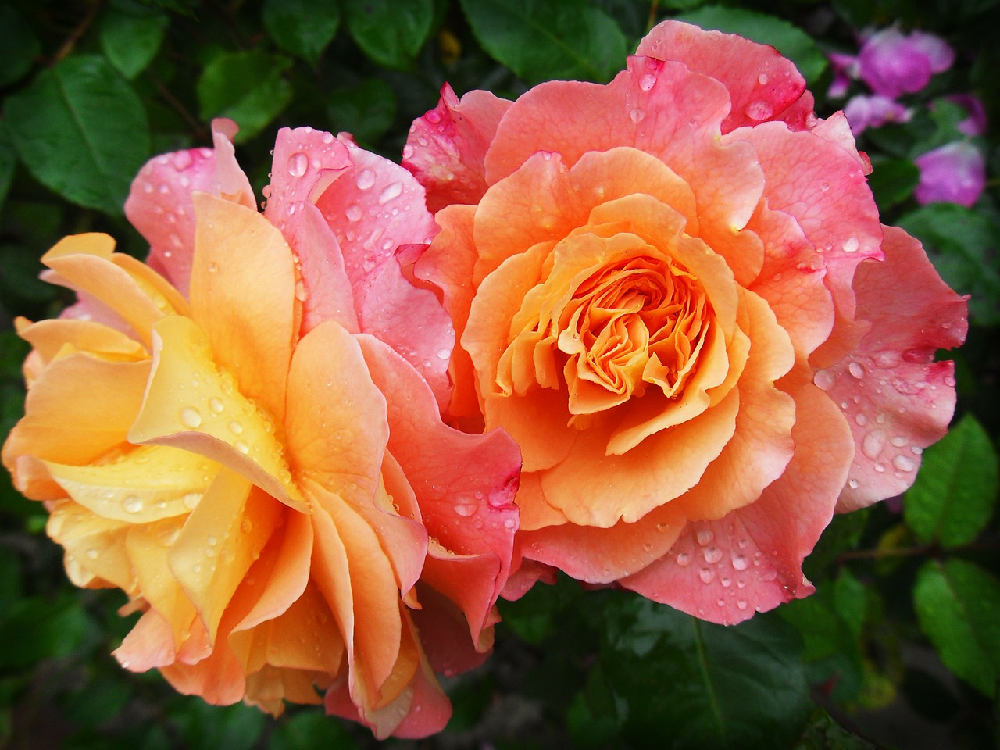

According to "The flower expert guide on flowers & gardening"... Growing flowers is an admiration for many people, a dream for so many and a full-time work for some others like who grow flower gardens for commercial purposes. Growing flowers thus serves the interests of diverse peoples. The Growing of flowers necessitates a lot of patience, love, & care. Growing a flower garden is indeed an exciting adventure altogether for those who are really crazy about flowers and growing flowers. Flowers are classified into three categories. These categories are annuals, perennials, and biennials. Once you discover all the different annual, biennial and perennial plants that you can grow and even start yourself, it´s just a simple step to preparing the beds. Annuals grow from seeds and flower the current year and then die. Perennials establish themselves from seed the first year but do not usually flower until the following year. This category of flowers will re-grow and flower for many years to come. Biennials grow as a small plant during the year they are planted. In the second year they will bloom and then perish.According to "The flower expert guide on flowers & gardening"... Growing flowers is an admiration for many people, a dream for so many and a full-time work for some others like who grow flower gardens for commercial purposes. Growing flowers thus serves the interests of diverse peoples. The Growing of flowers necessitates a lot of patience, love, & care. Growing a flower garden is indeed an exciting adventure altogether for those who are really crazy about flowers and growing flowers. Flowers are classified into three categories. These categories are annuals, perennials, and biennials. Once you discover all the different annual, biennial and perennial plants that you can grow and even start yourself, it´s just a simple step to preparing the beds. Annuals grow from seeds and flower the current year and then die. Perennials establish themselves from seed the first year but do not usually flower until the following year. This category of flowers will re-grow and flower for many years to come. Biennials grow as a small plant during the year they are planted. In the second year they will bloom and then perish.
What's Important In A Garden
11/7/24
According to "The flower expert guide on flowers & gardening"... Growing flowers is an admiration for many people, a dream for so many and a full-time work for some others like who grow flower gardens for commercial purposes. Growing flowers thus serves the interests of diverse peoples. The Growing of flowers necessitates a lot of patience, love, & care. Growing a flower garden is indeed an exciting adventure altogether for those who are really crazy about flowers and growing flowers. Flowers are classified into three categories. These categories are annuals, perennials, and biennials. Once you discover all the different annual, biennial and perennial plants that you can grow and even start yourself, it´s just a simple step to preparing the beds. Annuals grow from seeds and flower the current year and then die. Perennials establish themselves from seed the first year but do not usually flower until the following year. This category of flowers will re-grow and flower for many years to come. Biennials grow as a small plant during the year they are planted. In the second year they will bloom and then perish.
According to "The flower expert guide on flowers & gardening"... Growing flowers is an admiration for many people, a dream for so many and a full-time work for some others like who grow flower gardens for commercial purposes. Growing flowers thus serves the interests of diverse peoples. The Growing of flowers necessitates a lot of patience, love, & care. Growing a flower garden is indeed an exciting adventure altogether for those who are really crazy about flowers and growing flowers. Flowers are classified into three categories. These categories are annuals, perennials, and biennials. Once you discover all the different annual, biennial and perennial plants that you can grow and even start yourself, it´s just a simple step to preparing the beds. Annuals grow from seeds and flower the current year and then die. Perennials establish themselves from seed the first year but do not usually flower until the following year. This category of flowers will re-grow and flower for many years to come. Biennials grow as a small plant during the year they are planted. In the second year they will bloom and then perish.
Growing flowers is an admiration for many people, a dream for so many and a full-time work for some others like who grow flower gardens for commercial purposes. Growing flowers thus serves the interests of diverse peoples. The Growing of flowers necessitates a lot of patience, love, & care. Growing a flower garden is indeed an exciting adventure altogether for those who are really crazy about flowers and growing flowers. Flowers are classified into three categories. These categories are annuals, perennials, and biennials. Once you discover all the different annual, biennial and perennial plants that you can grow and even start yourself, it´s just a simple step to preparing the beds. Annuals grow from seeds and flower the current year and then die. Perennials establish themselves from seed the first year but do not usually flower until the following year. This category of flowers will re-grow and flower for many years to come. Biennials grow as a small plant during the year they are planted. In the second year they will bloom and then perish.
What Tools, And Why
11/7/14
 Growing flowers is an admiration for many people, a dream for so many and a full-time work for some others like who grow flower gardens for commercial purposes. Growing flowers thus serves the interests of diverse peoples. The Growing of flowers necessitates a lot of patience, love, & care. Growing a flower garden is indeed an exciting adventure altogether for those who are really crazy about flowers and growing flowers. Flowers are classified into three categories. These categories are annuals, perennials, and biennials. Once you discover all the different annual, biennial and perennial plants that you can grow and even start yourself, it´s just a simple step to preparing the beds. Annuals grow from seeds and flower the current year and then die. Perennials establish themselves from seed the first year but do not usually flower until the following year. This category of flowers will re-grow and flower for many years to come. Biennials grow as a small plant during the year they are planted. In the second year they will bloom and then perish.
Growing flowers is an admiration for many people, a dream for so many and a full-time work for some others like who grow flower gardens for commercial purposes. Growing flowers thus serves the interests of diverse peoples. The Growing of flowers necessitates a lot of patience, love, & care. Growing a flower garden is indeed an exciting adventure altogether for those who are really crazy about flowers and growing flowers. Flowers are classified into three categories. These categories are annuals, perennials, and biennials. Once you discover all the different annual, biennial and perennial plants that you can grow and even start yourself, it´s just a simple step to preparing the beds. Annuals grow from seeds and flower the current year and then die. Perennials establish themselves from seed the first year but do not usually flower until the following year. This category of flowers will re-grow and flower for many years to come. Biennials grow as a small plant during the year they are planted. In the second year they will bloom and then perish.
Growing flowers is an admiration for many people, a dream for so many and a full-time work for some others like who grow flower gardens for commercial purposes. Growing flowers thus serves the interests of diverse peoples. The Growing of flowers necessitates a lot of patience, love, & care. Growing a flower garden is indeed an exciting adventure altogether for those who are really crazy about flowers and growing flowers. Flowers are classified into three categories. These categories are annuals, perennials, and biennials. Once you discover all the different annual, biennial and perennial plants that you can grow and even start yourself, it´s just a simple step to preparing the beds. Annuals grow from seeds and flower the current year and then die. Perennials establish themselves from seed the first year but do not usually flower until the following year. This category of flowers will re-grow and flower for many years to come. Biennials grow as a small plant during the year they are planted. In the second year they will bloom and then perish.